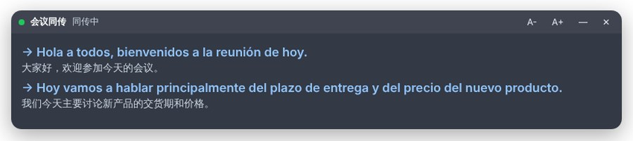
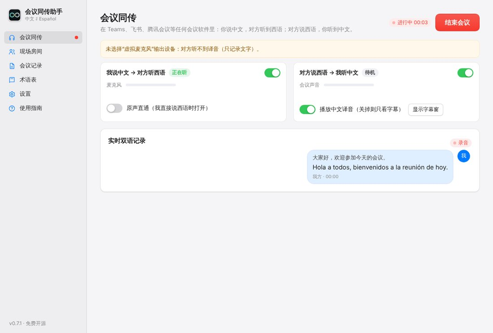
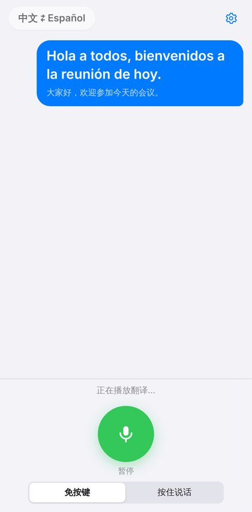
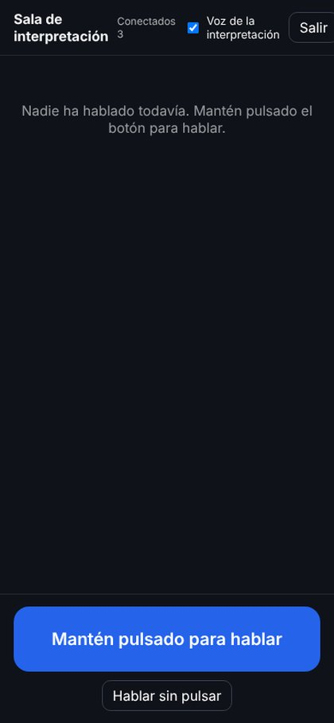
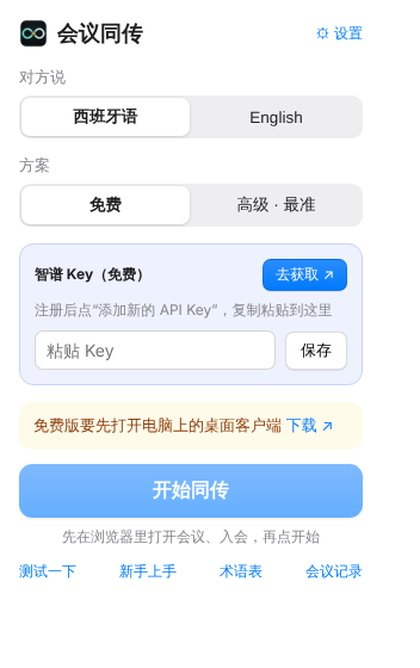

一个工具，线上线下都能用
按你开会的方式选一种，三四步就能上手。
线上开会 · 浏览器
装上插件就能用
用浏览器加入 Teams、Zoom、腾讯会议、飞书。你说中文，对方在会议里听到的是翻译后的声音，你的原声不会传过去。
- 对方说话，页面上浮出中文字幕
- 不用装虚拟声卡，不用改会议设置

线上开会 · 电脑客户端
任何会议软件都支持
Mac 和 Windows 桌面版，一键安装虚拟麦克风，在会议软件里选一下就行。双语逐句记录、录音录屏、会后一键生成中外文纪要。
- 术语表：公司名、产品名按你定的译法翻
- 可选“用我的声音”：对方听到的是你自己的音色

面对面 · 一部手机
放在中间，直接说
安卓 App 自动听出谁在说什么语言：说中文就念外语，说外语就念中文。手机念的时候自动不收音，不会重复翻译。
- 免按键，或按住说话
- 苹果手机：用电脑开“现场房间”扫码

多人现场 · 扫码
现场房间，每人一部手机
电脑开一个房间，大家用手机扫码加入，选自己的语言，戴上耳机。谁说话，其他语言的人就在耳机里听到译音、看到字幕。
- 手机不用装 App，苹果安卓都行
- 不在现场的人也能用公网链接加入


放心用
我们不收任何钱，也没有任何服务器。
🔑Key 只在你的设备上用你自己的服务账号，保存在本机，不会上传，别人看不到。
🔇原声不外传同传时会议里只有翻译后的声音。想自己说外语，打开“原声直通”。
🎯为准确而做术语表、近音纠错、带上下文翻译、自动检查漏翻。
💸可以完全免费本机离线识别 + 免费翻译模型；想要最准，用阿里云百炼一个 Key。
下载
第一次用？先看 新手上手。
Mac（Apple 芯片）M1 / M2 / M3 / M4
Mac（Intel 芯片）2020 年及更早的 Mac
WindowsWindows 10 / 11
Chrome / Edge 插件网页版会议，装上就能用
安卓手机面对面对话
LinuxAppImage
苹果手机：不用下载。在电脑上的会议同传助手里打开 “现场房间”，手机扫二维码，就能在浏览器里用。先看看手机版界面（演示）→
Mac 第一次打开：提示“无法验证开发者”时，打开 系统设置 › 隐私与安全性，点“仍要打开”。
Windows：出现蓝色提示时，点“更多信息” › “仍要运行”。
安卓：提示“禁止安装未知应用”时，按提示允许即可。华为鸿蒙 4 及以前也装安卓版（开着“纯净模式”时按提示允许安装）；鸿蒙 5（NEXT）装不了安卓应用，扫码在浏览器里用。
插件：解压 zip → Chrome 打开 chrome://extensions → 打开“开发者模式” → “加载已解压的扩展程序”。